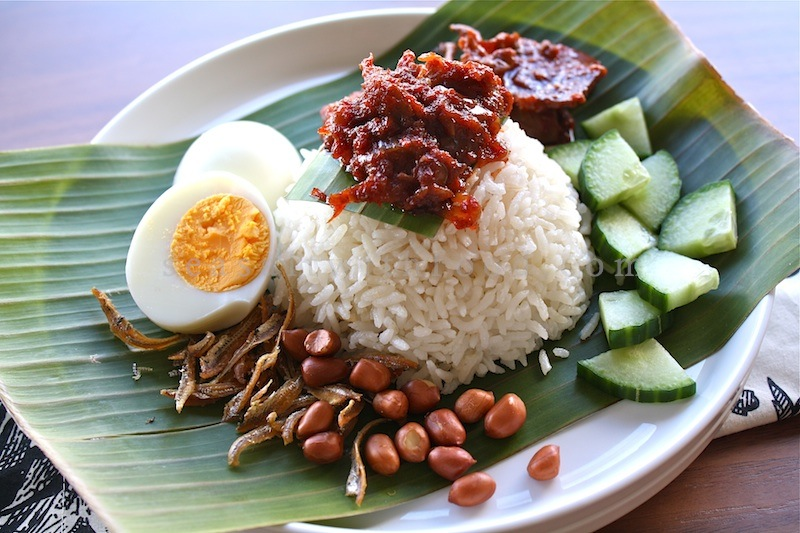

nasi lemak recipe

Nasi lemak is a fragrant rice dish cooked in coconut milk and screw pine leaves. It is commonly found in countries like Malaysia, Singapore and Indonesia. It is one of the most popular dish for the Malay-type breakfast and is a great party dish.
A truly remarkable Nasi Lemak (Coconut Milk Rice) is not to be taken lightly. It constitutes of good quality rice cooked in rich and creamy coconut milk with screw pine leaves infused during the cooking process to create the best flavours and texture. Hence much effort is required to prepare this legendary dish. It is always served with a good chili sauce (sambal) alongside other condiments.
Ingredients
- Coconut Milk Rice
- 1 kg rice, preferably basmati rice
- 6 cups water
- 200 ml Thick coconut milk (1 coconut)
- 3 pandan leaves/screwpine leaves, knotted and slightly bruised
- 2 stick lemongrass, bruised
- 1 ginger, crushed
- 1 tsp sugar, to taste
- 2 tsp salt, to taste
- 3 cups dried anchovies
- 1 cup oil
- 3 cloves garlic
- 12 shallots
- 30 dried chillies
Recipe instructions
First rinse the rice under cold, running water for a few minutes and drained. The water does not need to run perfectly clear but rinsing helps get rid of starch that can make the rice sticky. Then place the drained rice in a rice cooker.
The rice must be good. Any types of rice can be used but use a good quality rice. Basmati rice is perfect for this coconut milk rice.
Pour 50ml or 1/4 of the thick coconut milk (200ml / from 1 coconut) into a measuring cup. Then dilute with some water.
Add in salt and sugar and stir to mix. Do not add salt and sugar after rice is cooked as this will cause the rice to be overly salty.
Use thick coconut milk. This milky white liquid is obtained after adding water to freshly grated coconut and giving it a good squeeze or press. The thickness or creaminess of coconut milk is determined by the amount of water added. This squeezed coconut cream can also be store bought.
Return to top
Return to main